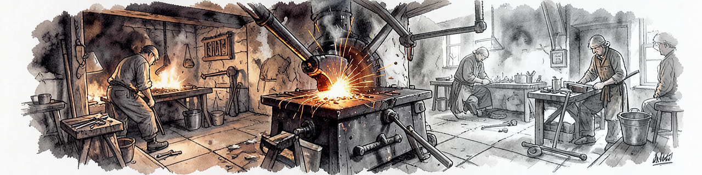

guile-sage — Multi-Provider AI Agent REPL
Architecture, Features, and Build Process
The Sage on the Mountaintop
A multi-provider AI REPL with tool calling, written in GNU Guile 3 Scheme
What is guile-sage?
An interactive AI agent REPL where:
- Intelligence is externalized to LLM providers (Ollama, Gemini, LiteLLM)
- Guardrails are externalized to LiteLLM proxy (EU AI Act compliance)
- Sage provides tools, observability, session management, and the loop
The REPL is the forge. The model is the fire. The tools are the hammer.
Architecture — The View from the Summit
Architecture — C4 Level 1
┌────────────┐ ┌──────────────┐ ┌──────────────┐
│ User │────▶│ guile-sage │────▶│ Ollama │
│ (terminal) │◀────│ REPL │◀────│ Gemini │
└────────────┘ │ │ │ LiteLLM │
│ 22+ tools │ └──────────────┘
│ 5 compact │
│ MCP client │ ┌──────────────┐
│ OTLP emit │────▶│ Prometheus │
└──────────────┘ │ + Grafana │
└──────────────┘
Provider Dispatch
Three backends, one interface:
| Provider | Transport | Use Case |
|---|---|---|
ollama |
Native /api/chat |
Local inference, free |
gemini |
Google AI API | Cloud, tool calling |
openai / litellm |
OpenAI-compat | Proxy with guardrails |
;; src/sage/provider.scm — dispatch by (current-provider) (case (current-provider) ((ollama) (ollama-chat-with-tools ...)) ((gemini) (gemini-chat-with-tools ...)) ((openai litellm) (openai-chat-with-tools ...)))
The Forge — Building Tools

Tool System — 22+ Built-In
| Category | Tools | Safe? |
|---|---|---|
| Files | read, write, edit, glob, search, list | Yes |
| Git | status, diff, log, commit, push, notes | Yes |
| Logs | readlogs, searchlogs | Yes |
| Tasks | create, complete, list, status | Yes |
| Images | generateimage (flux) | Yes |
| Meta | runtests, evalscheme, reloadmodule | YOLO |
Multi-step tool chains: re-prompt until no tool_calls, max 10 iterations.
Degenerate loop detection: same tool 3x in a row triggers early break.
Tool Chain Example
sage> Find all TODO comments and create a report [Tool: search_files] pattern="TODO" path="src/" Found 7 matches in 4 files... [Tool: write_file] path="output/todo-report.md" Wrote 23 lines... I found 7 TODO comments across 4 source files and wrote the report to output/todo-report.md.
Three tool calls, one prompt — the dispatch loop handles the chain.
The Scroll — Architecture Docs
Module Map (21 modules)
src/sage/ repl.scm REPL core (readline, /commands, dispatch loop) provider.scm Multi-provider dispatch ollama.scm Ollama native client openai.scm OpenAI/LiteLLM client (guardrail headers) gemini.scm Google Gemini client mcp.scm MCP SSE client (skills-hub) tools.scm 22+ tool registry (safe/unsafe split) telemetry.scm OTLP/HTTP JSON emission compaction.scm 5 context strategies context.scm Context window management session.scm JSON session persistence config.scm XDG config, .env loading model-tier.scm Token-based model selection logging.scm Structured JSONL logging ...and 7 more
Observability — OTLP to Prometheus
sage ──inc-counter!──▶ *counters* ──flush──▶ OTel Collector
(in-memory) (:4318/v1/metrics)
│
Prometheus :9090
│
Grafana :3000
/d/ai-tools/
6 counters emitted: session.count, token.usage, cost.usage,
active.time, code_edit.tool_decision, mcp.tool_call
Fail-soft: 60s backoff on flush failure, REPL never breaks.
The Bridge — Connecting Systems
MCP Integration
sage ──SSE──▶ skills-hub MCP server
├── tools/list (discover)
└── tools/call (execute)
- Fresh-SSE-per-call: new FIFO + curl per invocation (200ms overhead)
- Initialize handshake on every call (stale session fix)
SAGE_MCP_DISABLE=1to skip in CI
LiteLLM Guardrails
sage ──▶ LiteLLM proxy ──▶ Ollama/Gemini
├── PII redaction (CC, SSN, API keys)
├── Content filtering
└── x-litellm-applied-guardrails header
│
sage shows 🛡️ emoji in REPL
EU AI Act Art. 5 compliance via custom_code guardrails +
regex_replace for PII scrubbing. HTTP 400 blocks returned as
synthetic "BLOCKED by policy" responses.
Build Process
# Quick start cp .env.template .env && $EDITOR .env gmake check # 42 tests, all green gmake run # REPL with YOLO tools # Full pipeline gmake build # Compile .scm → .go gmake lint # 4 checks: code, org, docs, contracts gmake check # Unit + PBT + integration gmake version # Show semver gmake patch # Bump patch version gmake tag && gmake release # GitHub release
Test Architecture
| Suite | Tests | What |
|---|---|---|
| Unit (SRFI-64) | 42 | Module contracts |
| PBT | 76 properties | Invariants (7600 trials) |
| Contract lint | 12 checks | Boundary enforcement |
| Doc lint | 7 checks | Docs match implementation |
gmake check # All unit tests gmake lint # lint-code + lint-org + lint-docs + lint-contracts
Contract: if docs/ and src/ disagree, that's a bug.
Image Generation
;; Generate via Ollama flux model (ollama-generate-image "ink wash mountains with sage on summit" "output/sage-banner.png" #:width 1280 #:height 320)
make generate-showcase # 100 images → tests/fixtures/showcase/ make promote-images # Promote to images/ with README
Every image in this presentation was generated by guile-sage.
Session Management
- Per-project sessions (XDG-compliant paths)
- Token tracking (input/output per model)
- 5 compaction strategies: truncate, summarize, sliding-window, token-limit, importance-scoring
- Auto-compact at 80% context window
- Save/load to JSON
What's Next — v0.8.0
| Epic | Priority |
|---|---|
| Stdio MCP transport | P1 |
| Prompt caching (Ollama) | P2 |
| Web search tool | P2 |
| Plan/read-only mode | P2 |
| Auto-memory | P2 |
| Mock HTTP framework for tests | P2 |
| Error path test coverage | P2 |
Thank You
guile-sage v0.7.0 — https://github.com/dsp-dr/guile-sage
The REPL is the forge. The model is the fire. The tools are the hammer.